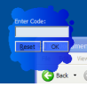
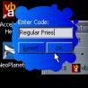
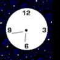

Creating Single Pixel Dotted Lines
Creating Single Pixel Dotted Lines
 Drawing Borders and Edges using the API DrawEdge Function
Drawing Borders and Edges using the API DrawEdge Function
 Draw disabled, colourised and dithered icons with the DrawState GDI function
Draw disabled, colourised and dithered icons with the DrawState GDI function
 Reading and Saving .ICO files and resources in VB
Reading and Saving .ICO files and resources in VB
 Fading Out Selected Areas Using UpdatedLayeredWindow
Fading Out Selected Areas Using UpdatedLayeredWindow
 Simple Text Animation effects using Kerning
Simple Text Animation effects using Kerning
 Tiling Bitmaps into Controls, Forms and MDI Form backgrounds
Tiling Bitmaps into Controls, Forms and MDI Form backgrounds

Changing Window Shapes Index
|  | Window Shapes Using LayeringThis article provides an alternative, higher-performance way of creating a custom-shaped Windows region from a bitmap for Windows 2000 and XP systems. Prior to Windows 2000, window shapes could only be customised using the SetWindowsRgn API. In Windows 2000 and above support the Layered Windows APIs, which allow for considerably greater flexibility in drawing transparent or alpha-blended window parts. Last Updated: 7 January 2003 |
|  | Creating Window Shapes from BitmapsThe Windows Shape article shows how to use the SetWindowRgn function to apply a geometric region to a window using the GDI region creation functions. However, beyond using a simple geometric region, things get difficult. How do you specify the exact shape you want? This article demonstrates how to use a bitmap to create the Windows region for completely unique forms and controls! Last Updated: 13 August 1999 |
|  | A window that's star-shaped, circular or tank-shapedJust for fun, its surprisingly easy now to create Windows or controls of any shape whatsoever under Visual Basic. This article demonstrates using SetWindowsRgn to create Windows with a variety of geometric shapes. Last Updated: 13 August 1999 |